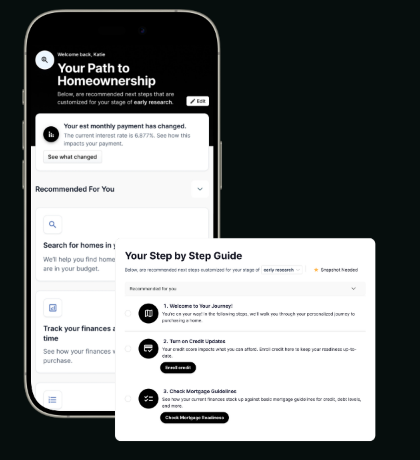

The move-up method.
Start with the life.Then structure the loan.
Tap below to open the room. The countdown and lobby music will start.
Presenting live? Press P for floating notes or N for a second-screen presenter view. Arrow keys advance. F fullscreen · M music.
To skip the countdown, add ?mins=0 to the URL or press → after joining.
We're starting soon.
Ready when you are
The move-up
method.
A life-first framework for the sale, the next purchase, and the financing between them.
Start with the life.Then structure the loan.
Daryn Fillis · NEO Home Loans · NMLS #1988371
The first question is not "What is the rate?"
Better questions.Better decisions.
THE LIFE CHANGES FIRST
The home that worked before
may not fit what comes next.
WHY DARYN
I start with the decision,
not the product.
I connect the goal, timeline, cash flow, liquidity, equity, and risk before recommending a loan structure.
The result is not one answer for every homeowner. It is a clearer view of the tradeoffs and a plan the real estate and lending teams can execute together.
Better questions.Better decisions.
THE MOVE-UP METHOD
Start with the life. Then run the method.
Three steps. One coordinated plan.
Build the full picture: goal, timeline, equity, debt, cash flow, reserves, and buying power.
Compare responsible structures. Make the tradeoffs visible before choosing one.
Coordinate the sale, the next purchase, the loan, and a backup path as one move.
Audit with better questions. Engineer the tradeoffs. Execute the next action.
"I have to sell my current home
before I can buy the next one."
That may be the right sequence. It is not the only sequence worth testing.
Fed researchers estimated that mortgage-rate lock-in explained 44% of the decline in moves among mortgage holders from 2021 to 2022.
BETTER QUESTION
Which sequence creates the right balance
of certainty, cost, and flexibility?
Lowest overlap risk, but it may require temporary housing or a replacement contingency.
More control over the move, if income, equity, reserves, and program rules support it.
Limits overlap, but requires precise coordination and a realistic backup plan.
Can preserve the asset, if rental income, reserves, management, and risk all work.
"Giving up my low rate means
moving cannot make sense."
A low rate has real value. The question is what the entire stay-or-move decision costs and makes possible.
Rate-first thinking is the starting question. It should not be the final answer.
THE FULL DECISION
What is the rate? Start there.
Do not stop there.
What full payment leaves room for everything else?
What cash and borrowing capacity remain accessible?
What is the household's full cost of borrowing?
What happens if the sale or closing date changes?
Principal, interest, taxes, insurance, MI, and HOA.
How long do the home and loan need to work?
"The largest down payment
is always the safest choice."
Sometimes it is. Sometimes preserving reserves, reducing expensive debt, or keeping options open matters more.
Maximum is a number. Optimal depends on the plan.
BETTER QUESTION
What else does the equity
need to accomplish?
Down payment, closing costs, and a full PITIA guardrail.
Overlap, repairs, moving, major purchases, and timing surprises.
High-cost debt, emergency reserves, and accessible liquidity.
A deliberate plan for cash kept outside the house.
STEP 01 · AUDIT
Build the complete picture.
Illustrative Southern California homeowner
Purchase price $655,000
After about 10 years of payments
A scenario input, not an appraisal
Before selling costs and adjustments
Before choosing a structure, add the life goal, timeline, reserves, income, debts, and risk tolerance.
STEP 02 · ENGINEER
Compare the tradeoffs, not just the down payment.
$1.3M purchase · 30-year fixed · 6.5% illustrative rate · principal and interest only
| DECISION | MORE EQUITY DOWN | 20% DOWN |
|---|---|---|
| Down payment | $528,000 | $260,000 |
| Loan amount | $772,000 | $1,040,000 |
| Monthly P&I | $4,880 / mo | $6,574 / mo |
| Equity kept liquid | $0 | $268,000 |
Both structures may qualify. The right one depends on what the retained cash needs to do and whether the full PITIA fits the life plan.
Illustration excludes taxes, insurance, HOA, closing costs, and investment outcomes.
STEP 03 · EXECUTE
Turn two transactions
into one coordinated move.
Confirm the life timeline
Target move date, acceptable overlap, and backup housing.
Approve the structure
Income, equity access, reserves, and a stress-tested payment.
Coordinate the contracts
Sale, purchase, contingencies, credits, and closing dates.
Keep a backup path
A plan for appraisal, delayed sale, repair, or timing changes.
ONE TACTICAL OPTION
Credits can change the payment.
They do not erase the tradeoffs.
$732,000 loan · 30-year fixed · principal and interest only
Baseline principal and interest payment.
About $471 lower per month before full housing costs.
Before using credits, test the cost, contribution limits, appraisal, qualifying rules, and how long the client expects to keep the loan.
Illustration only. Actual rates, pricing, eligibility, and contribution limits vary. See Fannie Mae B3-4.1-02.
A mortgage should create
options, not pressure.
If the structure only works when everything goes perfectly, it is not finished.
DARYN'S STORY
Start with the move,
not the mortgage.
Playa del Rey to El Segundo
The next neighborhood and the next chapter came first.
One connected plan
Departure-residence cash flow, timing, reserves, and the next purchase were modeled together.
Closed in 15 days
A personal example, not a promise of timing for every transaction.
The structure served the move.
MOVE-UP STRATEGY CALL
Seven better questions before loan options.
How long should each part of the plan need to work?
What full PITIA leaves room for the rest of life?
What income, reserves, debts, and capacity stay visible?
How much cash belongs inside the house versus outside it?
Who reviews the strategy when life or markets change?
What keeps the plan resilient if the timing changes?
Where will monthly savings go automatically?
One plan. Clear tradeoffs. A next action the client can actually follow.
THE NEO EXPERIENCE
Do not guess.
Have confidence in the next step.
Keep the homeowner's strategy visible after closing, including value, equity, payment, and the next decision.

The NEO Experience App
A clearer view of the home and mortgage position after closing.

MORTGAGE UNDER MANAGEMENT
Closing is the starting line.
The strategy keeps moving.
The loan is temporary.The strategy lasts.
Book your Hidden Asset
Strategy Call.

Free. 45 minutes. No obligation.
You walk away with your real numbers and a real plan.
Drop "STRATEGY" in the chat and we'll send you the link directly.
424-396-6967 · darynfillis.com/schedule
Start with the life.
Then structure the loan.
The sale, the next purchase, the financing, and the post-closing action become one coordinated move.
Better questions.Better decisions.
What are your clients
running into right now?
Better questions.Better decisions.
Start with the life.
Then structure the loan.
424-396-6967 · darynfillis.com/schedule